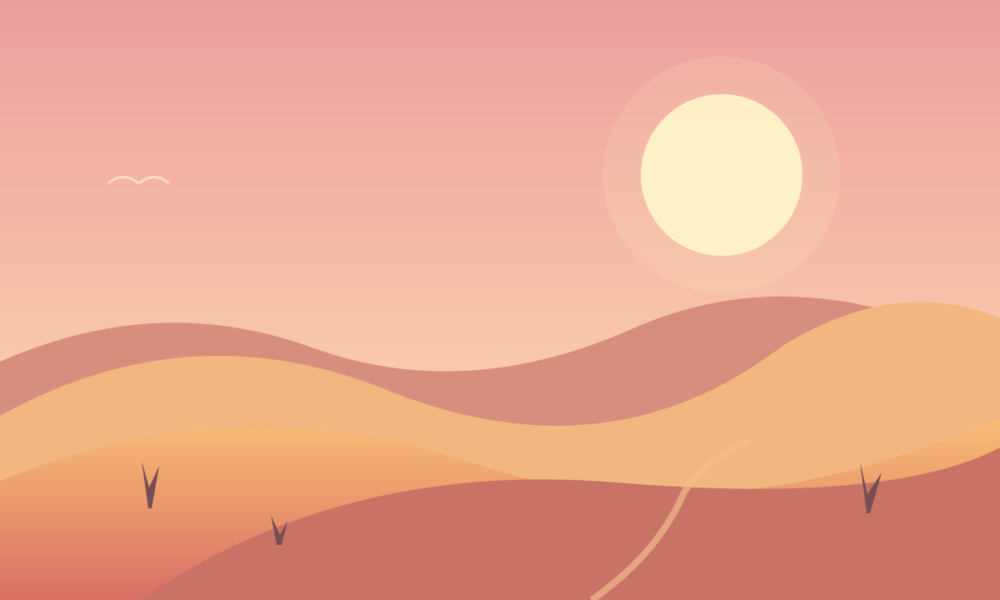
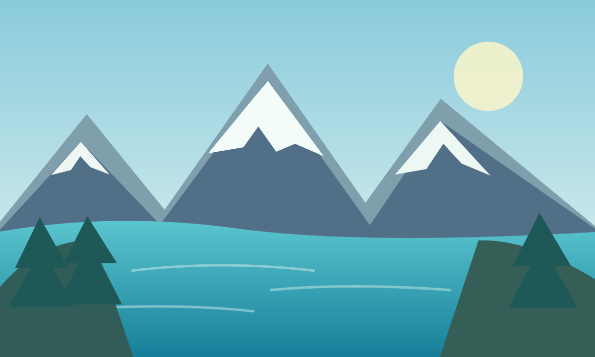
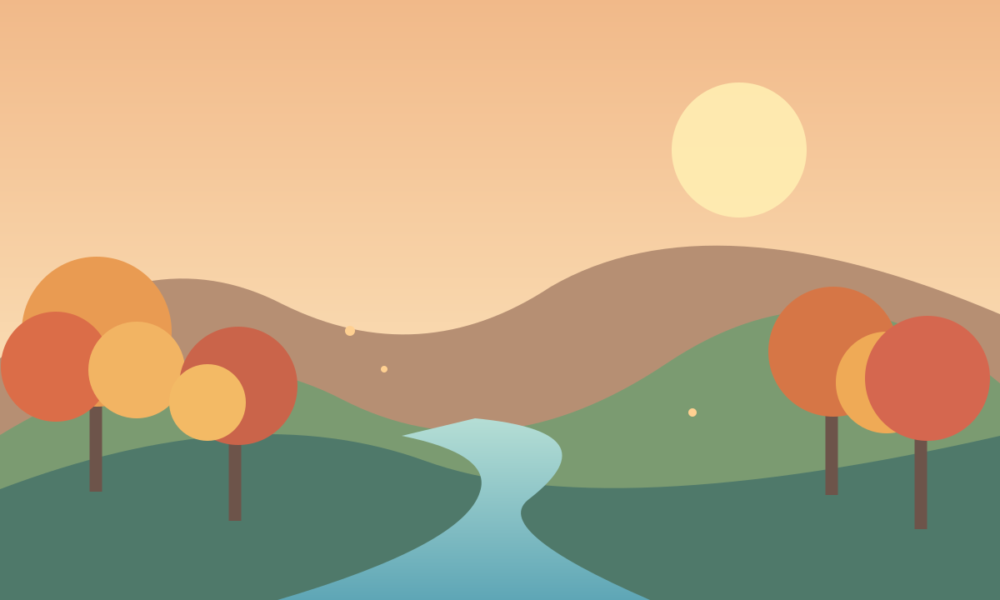
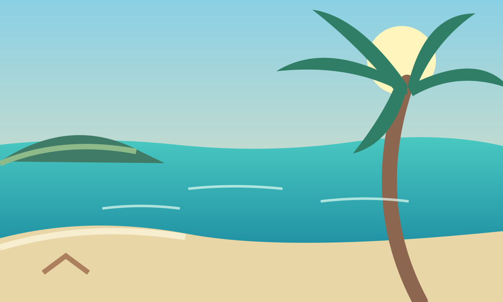
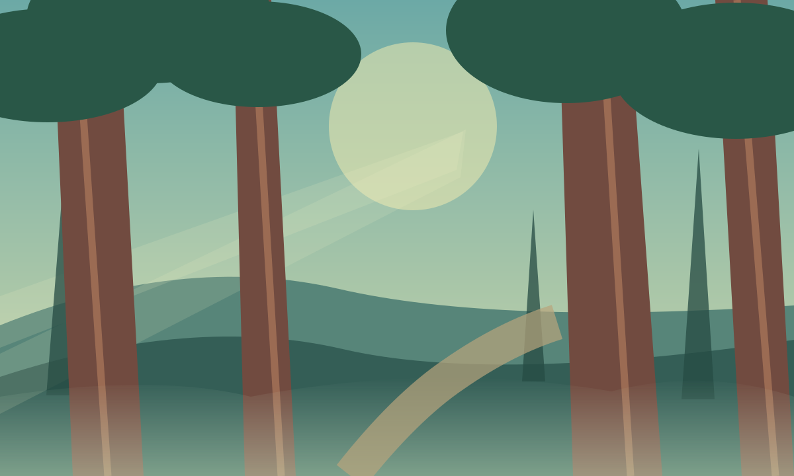
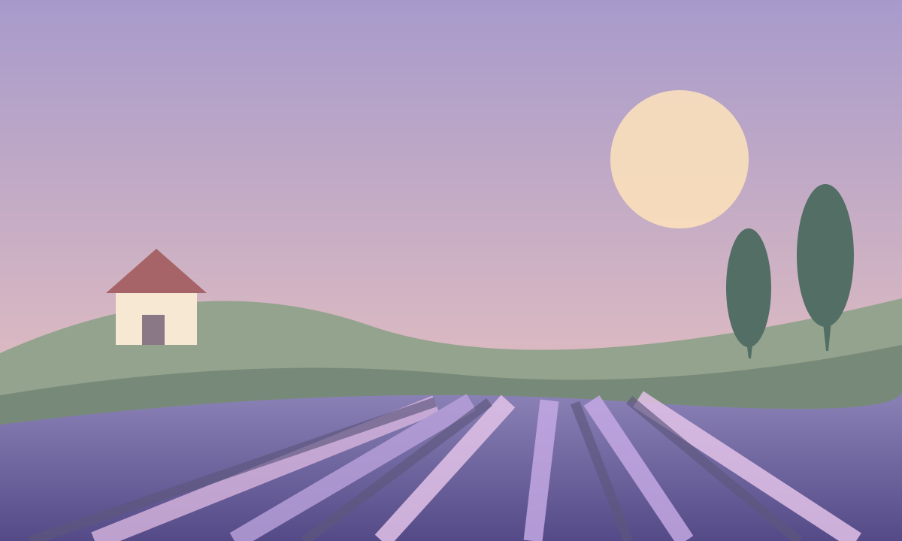

A world of wonder,
one horizon at a time.
From sunlit desert dunes to quiet alpine lakes, every landscape has a story to tell. This collection brings together nine original illustrations inspired by the colors, textures, and peaceful moments found in nature.
Explore the scenes below at your own pace. The gallery adapts to phones, tablets, and larger screens, while respecting your device's dark-mode and reduced-motion preferences.
THE COLLECTION01 — 09





